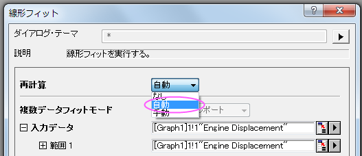
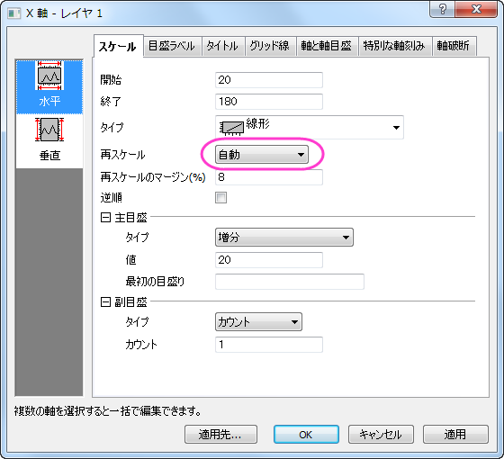
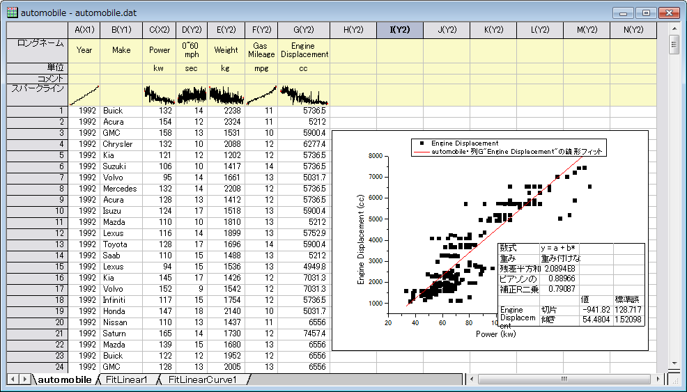
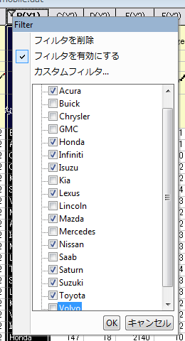
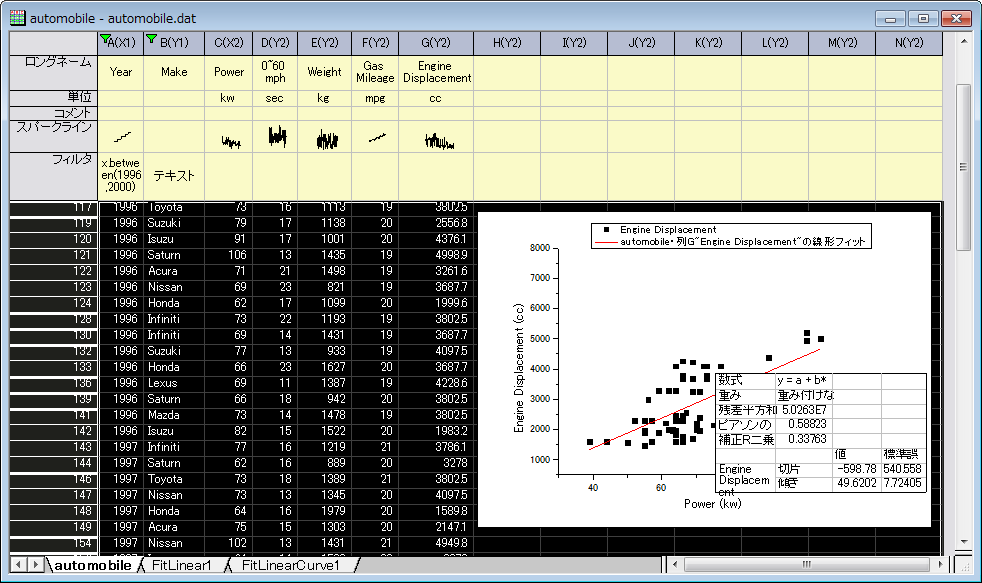

データフィルタ
Data-Filter
概要
データフィルタはベースのツールで、ワークシートデータの行を削減し、それに対応して分析やグラフのデータで必要ではないものは非表示にします。数値、テキスト、日付/時間の3種類のデータ形式がサポートされています。
必要なOriginのバージョン: Origin 2015 SR0以降
学習する項目
このチュートリアルでは、以下の項目について解説します。
- データフィルタを使用してワークシートのデータを削減する
- 列フィルタを適用した時に、グラフや解析を自動更新する
- ワークシートにフローティンググラフを追加する
ステップ
- 新規ワークブックを開きます。ヘルプ: フォルダを開く: サンプルフォルダを選択して、サンプルフォルダを開きます。このフォルダ内のStatisticsサブフォルダにあるautomobile.dat ファイルを探します。空のワークシートにファイルをドラッグアンドドロップしてインポートします。
- 列C(Power)を選択し、右クリックで表示するコンテキストメニューから、列XY属性の設定：X列 と操作してX属性に設定します。
- 列CとGを選択（Ctrlキーを押しながらクリック）して、 2D グラフギャラリーツールバーで
 ボタンをクリックし、散布図を作成します。
ボタンをクリックし、散布図を作成します。
- 作成したグラフをアクティブにし、解析：フィット：線形フィットメニューを選択し、線形フィット ダイアログを開きます。このダイアログで、再計算モードを自動に設定し、解析結果を自動更新するようにします。それ以外の設定はデフォルトのままでOKをクリックして解析を実行します。
- 
- フィット曲線と結果表がグラフに追加されます。グラフをアクティブにし、X軸をダブルクリックして軸ダイアログを開きます。スケールタブで水平アイコンアイコンを選び、再スケールを自動にします。同じ操作をY軸 （垂直アイコン）に対して行い、再スケールモードを自動にします。OKをクリックしてこの設定を適用して、ダイアログを閉じます。
- 
- 元のワークシートのautomobileに戻り、列：新規列の追加をクリックしてワークシートに7列を追加します。
- ワークシートの列の右側にある灰色の領域を右クリックして、コンテキストメニューのグラフを追加...を選択してグラフブラウザを開きます。このダイアログで、左側のパネルで以前に作成したグラフを選択し、OKをクリックしてこのグラフをフローティンググラフとしてワークシートに追加します。作成したばかりの空のワークシート列にフローティングチャートをドラッグし、選択ハンドルを使用してサイズを変更します。
- 
- ワークシートデータツールバーからデータフィルタの追加/削除ボタン をクリックして、空のデータフィルタを列Bに追加します。
- B列の列ヘッダのフィルタアイコン
 をクリックし、Buick、Chrysler、GMC、Kia、Lincoln、Mercedes、Saab、Volvoのチェックを外してこれらのエントリを含むすべての行を非表示にします。これにより日本のメーカーのみが残ります。OKをクリックして、フィルタを適用します。ワークシートのデータ、グラフ、分析結果はそれに応じてすべて自動更新されます。
をクリックし、Buick、Chrysler、GMC、Kia、Lincoln、Mercedes、Saab、Volvoのチェックを外してこれらのエントリを含むすべての行を非表示にします。これにより日本のメーカーのみが残ります。OKをクリックして、フィルタを適用します。ワークシートのデータ、グラフ、分析結果はそれに応じてすべて自動更新されます。
- 
- A列の列ヘッダのフィルタアイコンをクリックして範囲を選択します。インポート時の列Aのデータタイプはデフォルトで数値であることに注意してください。範囲ダイアログのデフォルト設定のままでOKをクリックします。この列にデータフィルタが適用されます。
- 列Aにあるフィルタアイコンを再度クリックし、今度はコンテキストメニューのカスタムフィルタ を選択してフィルタをカスタマイズします。条件をx.between(1996,2000)に設定して開始と終了値を対応させます。テストボタンをクリックしてこのテスト条件に合致するものの元データがハイライトされるので、データ削減のプレビューとして使えます。
 | この時点でワークシート全体を表示するには、カスタムフィルタダイアログを最小化してワークシートをスクロールします。再びダイアログで「最小化」ボタンをクリックすればダイアログは開き、追加設定を行えます。

|
- OKボタンをクリックしてフィルタの条件を適用すると、データ、グラフ、解析結果が更新されてデータ数が減ったことが確認できます。
- 
| Origin 2019からは、ある列からデータフィルタをコピーして他の列のデータに貼り付けることができます。列のフィルタセルを右クリックしてコピーを選択します。またはフィルタセルをクリックしてCtrl+Cキーでフィルタをコピーします。次に、対象列を選択し、Ctrl+Vキーでフィルタを貼り付け、それらの列のデータに適用します。
|